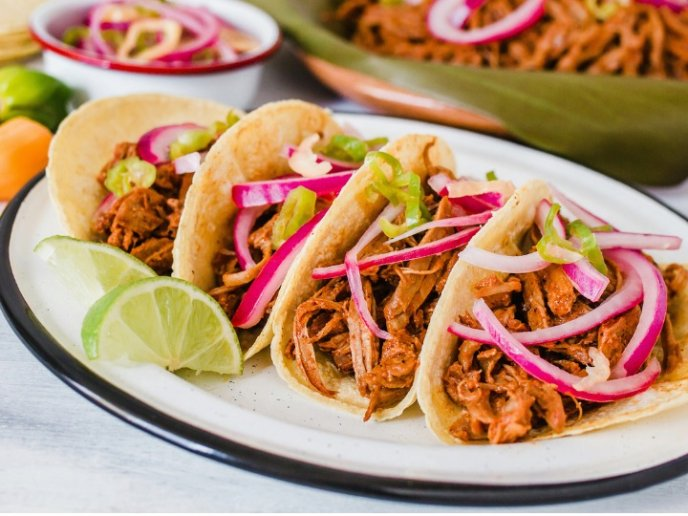

Cochinita Pibil

Cochinita pibil is a traditional Mexican slow-roasted pork dish from the Yucatán Peninsula.
Preparation of traditional cochinita involves marinating the meat in strongly acidic citrus juice, adding achiote, which imparts a vivid burnt orange color,
and roasting the meat in a píib (a type of earth oven) while it is wrapped in banana leaves.
However, since most people don't have access to a píib, this recipe uses a regular oven instead.
Ingredients:
- 75g Of achiote
- 3/4 Cup of natural orange juice
- 1/2 Spoonful of black pepper
- 1 Spoonful of cinnamon
- 1/2 Spoonful of cumin
- 2 Cups of water
- 1 Spoonful of salt
- 1/4 Cup of pork lard
- 4 Banana leaves
- 1kg of pork
Cooking:
- Mix the achiote, orange juice, salt, pepper, cinnamon, cumin, water and lard in a blender.
- Marinate the pork in the mixture, cover and refrigerate for 3 hours.
- Preheat oven at 180°C.
- Cover an oven safe container with the banana leaves, put the meat in the container, then cover the meat with more banana leaves and tin foil on top.
- Cook the meat in the oven for 2 to 2.5 hours in the oven at 180°C.
- Once cooked, shred the meat and cook on a pan with the left over liquid until the liquid thickens a bit.
- Serve with some tortillas and pickled red onions.
[Return to Main Page]